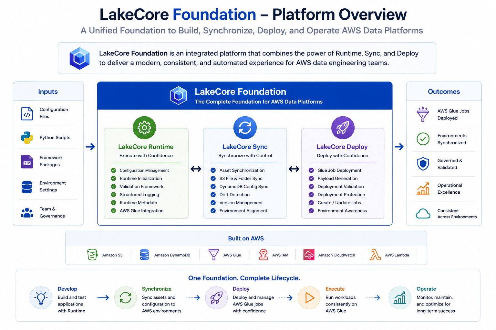
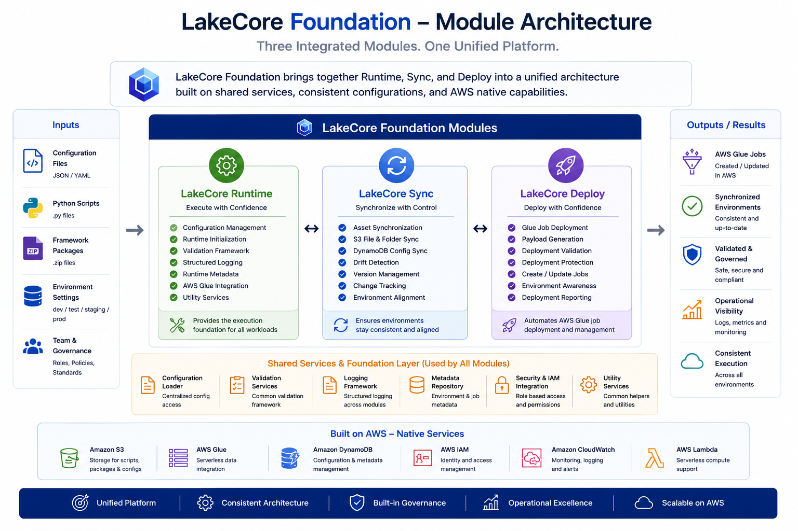
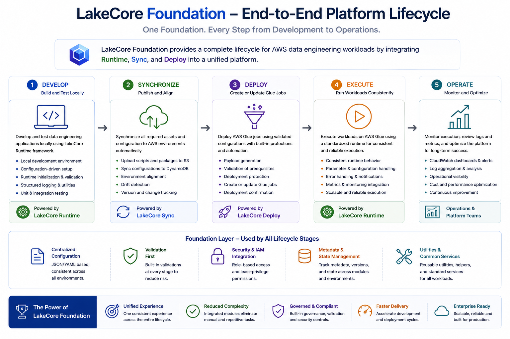
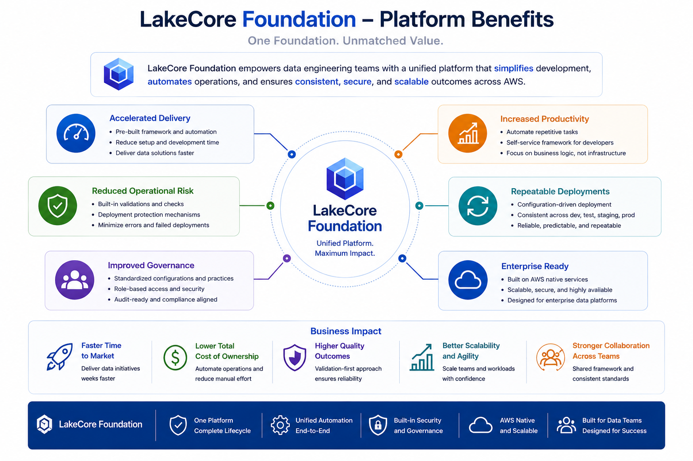

Configuration Driven Architecture
Manage runtime behavior, deployment settings, and synchronization activities through centralized configuration files.
The Complete Foundation for AWS Data Platform Development
LakeCore Foundation combines the core capabilities of LakeCore Runtime, LakeCore Sync, and LakeCore Deploy into a single integrated platform designed to accelerate the development, deployment, and management of AWS based data engineering solutions.
The Foundation bundle provides everything required to build, deploy, synchronize, and operate AWS Glue workloads using a consistent, configuration driven architecture.

Modern data platforms often require multiple tools to manage configuration, deployment, environment synchronization, and operational controls.
LakeCore Foundation unifies these capabilities into a single framework, providing a consistent approach to development and platform operations across the entire application lifecycle.
From local development through production deployment, every component follows the same configuration driven model, reducing complexity while improving maintainability and governance.
Manage runtime behavior, deployment settings, and synchronization activities through centralized configuration files.
Support development, testing, staging, and production environments through environment specific configuration management.
Eliminate manual deployment of scripts, packages, and configuration assets.
Create and manage AWS Glue jobs without manual AWS Console administration.
Validate configurations, resources, packages, scripts, and deployment prerequisites before execution.
Standardize platform operations across projects and environments.

Reduce the effort required to build, deploy, and manage AWS Glue solutions.
Built in validation, deployment protection, and configuration management reduce the likelihood of operational errors.
Maintain consistent deployment standards, configuration practices, and environment management processes.
Allow developers and platform teams to focus on business logic rather than infrastructure administration.
Support consistent deployments across development, staging, and production environments.
Designed to support scalable AWS data platforms through standardized operational practices.


LakeCore Foundation provides a unified framework for developing, synchronizing, deploying, and operating AWS Glue workloads. By combining Runtime, Sync, and Deploy into a single integrated platform, organizations gain a consistent, repeatable, and scalable approach to modern AWS data engineering.
Buy NowLakeCore Foundation provides a unified framework for developing, synchronizing, deploying, and operating AWS Glue workloads. By combining Runtime, Sync, and Deploy into a single integrated platform, organizations gain a consistent, repeatable, and scalable approach to modern AWS data engineering.